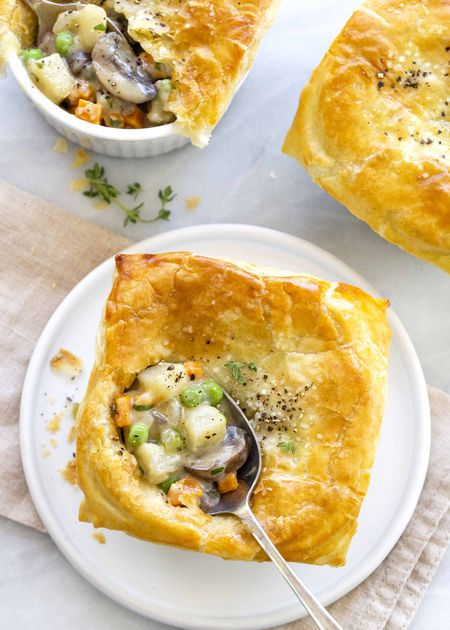

Ingredients
- 1 package of puff pastry, thawed
- 1/3 cup unsalted butter
- 1 cup diced red onions, 1/4in diced
- 1 cup diced carrots, 1/4in diced
- 1/2 cup diced celery, 1/4in diced
- 1 tablespoon minced garlic
- 1/2 teaspoon dried thyme
- 8 ounces sliced brown mushrooms
- 1 1/2 pounds russet potatoes, 1/4in diced
- 1 teaspoon kosher salt
- 1/2 teaspoon black pepper
- 1/3 cup flour
- 1 1/2 cup vegetable stock
- 1 cup whole milk, plus 1 tablespoon for egg wash
- 1 cup peas
- 1 tablespoon chopped parsley
- 1 large egg, whisked
Cooking Steps
- prepare the puff pastry
- cook the vegetables
- make the gravy and finish the filling
- preheat the oven and fill the ramekins
- cut the puff pastry
- bake the vegetable pot pies